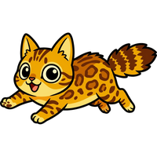
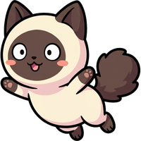
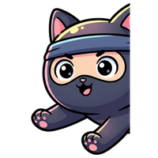
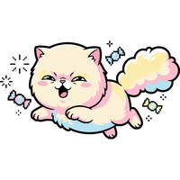

A
Fil de laine
ma recommandationLa pelote se déroule en volant. Chaque chat qui touche le fil s'y emmêle. Quand la pelote sort de l'écran, le fil se rembobine et ramène tous les chats d'un coup.
Trace des fils qui traversent un maximum de chats. Les rebonds sur les bords allongent le fil. Points = chats sur le fil, au carré. Attention au ninja.
Pourquoi on rejoue
Un tir peut ramener 1 chat ou 7. L'écart entre les deux, c'est de la lecture (où vont-ils être dans une seconde ?) et de la bande (un rebond double la longueur du fil). Battre son meilleur fil n'a pas de plafond.
Ce qui se partage
« 7 chats sur un fil ». Le geste tient en une image : un trait orange qui zigzague et une grappe de chats emmêlés. Le replay de 3 secondes se comprend sans le son et sans le contexte.
Les caractères changent la géométrie

Joueur : saute sur un fil qui passe près de lui. Un fil tiré à côté le ramène quand même.
Trouillard : bondit de côté quand la pelote approche. On le pousse dans un fil déjà tendu.
Ninja : coupe le fil. Tout ce qui était emmêlé retombe. On l'attrape seul, ou on l'évite.
Plus tard : le chat lourd qui tend le fil vers le bas, la mère qui entraîne ses chatons sur le fil, le chat qui se démêle si on attend trop.Risque : si les chats sont trop serrés, le fil attrape tout sans viser. À régler : la densité et la longueur maximale du fil. Test : un joueur fait-il un fil de 4 chats ou plus volontairement, et le dit-il à voix haute ?
Ton avis